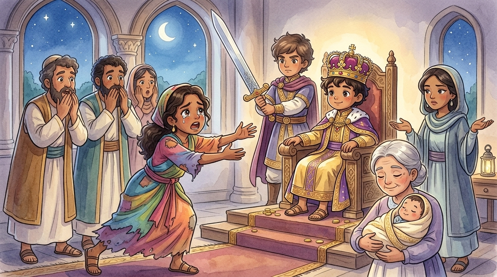

Order! Order in the court! Today's case is the strangest ever brought before the throne of Israel. But before we hear it, the court must explain how our judge — a king barely grown — became the wisest man in the world.1
Exhibit A: The dream
Soon after Solomon became king, God appeared to him in a dream at night and said something astonishing: "Ask for whatever you want me to give you." Imagine that! Anything! Piles of gold? A hundred palaces? The longest life in history? Every enemy defeated forever?
Young Solomon thought of the enormous job in front of him — a whole nation looking to him for answers — and made his choice:
The Bible says this answer made God glad. "Because you asked for wisdom," God said, "and not for long life or riches or victory — I will give you the wisest heart anyone has ever had. And I'll give you the riches and honor you didn't ask for, too."2
A lovely dream. But dreams are easy, dear court. The question on everyone's lips: would this famous "wisdom" actually work? The whole nation was about to find out.
The case: one baby, two mothers
Two women stood before the throne. No lawyers. No witnesses. No proof at all.3 Just two mothers who shared a house, two baby boys born days apart — and one terrible night.
"Your Majesty, we live in the same house. We both had baby boys — no one else was there. In the night, her son sadly died. So while I slept, she swapped the babies — she took my living son and laid her son in my arms. When I woke to feed my baby, I found him still and cold… but when I looked closely in the morning light, I saw: this was not the boy I gave birth to!"
"Lies! The living one is MY son. The dead boy was hers!"
"No! The living one is mine!" "It's mine!" "MINE!" Back and forth they argued before the king. The royal court held its breath. How could anyone on earth solve this? No cameras. No documents. Two stories, exactly opposite, and only the two women knew the truth.
"Impossible case. Fifty-fifty. Even old King David couldn't have untangled this one. Let's see what the young king does…"
The verdict nobody expected
Solomon was quiet for a moment. Then he said, calmly as you like: "Bring me a sword."
A sword?! The court gasped. A guard stepped forward, blade gleaming. And the king gave his order:

Now watch closely, dear court, because everything happens in the next three seconds. One woman nodded and said, "Fine. Divide him — if I can't have him, neither of us will." But the other woman threw herself forward with a cry:
And Solomon smiled, because the case had just solved itself. He never intended to harm the child — the sword was never for the baby. It was for the truth. A real mother's love would rather lose her son than see him hurt. The king raised his hand:
Witnesses called: 0 · Evidence presented: 0 · Swords used: 0 (just shown!) · Seconds needed: about 3 · Babies returned to their real mother: 1 · Court status: jaws on the floor.
The word spreads
The Bible tells us that when all Israel heard of the verdict, they were filled with awe, "because they saw that the wisdom of God was in him to do justice." Not clever-trick wisdom. Not book-smart wisdom. God's own wisdom — the kind that sees straight into human hearts. Kings and queens would one day travel from distant lands just to ask Solomon their hardest questions.4
Court dismissed! But take this home with you: Solomon's wisdom didn't come from being the smartest kid in class. It came because he asked God for it. And here's the best part — the Bible says God still gives wisdom, generously, to anyone who asks Him. Yes, including you. That offer has never expired. ⚖️